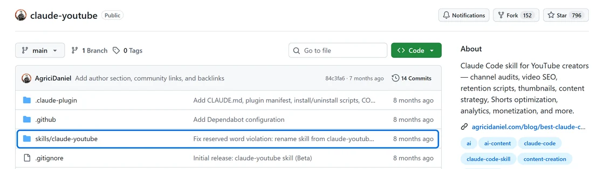

YouTube-продюсер в Claude Code
Бесплатный скилл на 14 команд: хуки, обложки, идеи и конкуренты
Шаги ниже подстроятся под твой выбор
Что он умеет
- Пишет 5 хуков к ролику и оценивает риск, что зритель пролистнёт
- Придумывает 3 варианта обложки и названия к ним
- Находит топ-10 роликов твоих конкурентов и темы, которых у них ещё нет
- Даёт 10 идей с хуком и обложкой под твой канал
- Расписывает ролики на месяц вперёд
Что понадобится
- Claude Code. Он входит в тарифы Pro, Max, Ultra, Team и Enterprise, на бесплатном его нет
- Компьютер на Windows или Mac: приложение Claude или Claude Code в терминале
- Git: через него скилл скачивается с GitHub. Как поставить, в шаге 1
Шаг 1 из 4
Проверь Git
- Открой PowerShell: нажми «Пуск», напиши PowerShell и открой его
- Открой Терминал: нажми Cmd+Пробел, напиши Терминал и открой его
- Вставь команду и нажми Enter
git --versiongit version 2.56.1. Цифры могут быть другими, значит Git уже естьПишет, что git не найден? Поставь его
winget install --id Git.Git -e --source wingetxcode-select --installШаг 2 из 4
Открой Claude Code
- Открой приложение Claude и перейди на вкладку Code вверху слева
- Под полем ввода выбери Local, затем Open folder… и любую папку, например новую папку youtube
claude в любой папкеШаг 3 из 4
Скинь ссылку на скилл
Скопируй фразу, вставь в Claude Code и отправь. Он сам скачает скилл и положит его в папку со скиллами

Через терминал, если привык
irm https://github.com/AgriciDaniel/claude-youtube/raw/main/install.ps1 | iexcurl -fsSL https://github.com/AgriciDaniel/claude-youtube/raw/main/install.sh | bashШаг 4 из 4
Проверь, что скилл на месте
- В поле ввода Claude Code набери
/и начни писать youtube - В списке появится youtube. Значит, всё готово
/reload-skills и набери ещё разПопробуй команды
Пиши /youtube, название команды и пару слов о своём канале. Выбери пример над окном
Разобрать канал целиком
Ответы примерные, у тебя ИИ скажет своими словами
Все 14 команд
/youtube audit аудит канала: поиск, просмотры, контент и монетизация/youtube hook 5 хуков с риском, что зритель пролистнёт/youtube thumbnail 3 варианта обложки с цветами и раскладкой/youtube seo 3 названия, описание, теги, таймкоды и хэштеги/youtube script сценарий ролика, который держит внимание/youtube shorts сценарий Shorts, описание и прогноз/youtube repurpose куски для Shorts из длинного ролика, пост, рассылка и подкаст/youtube analyze разбор аналитики канала и что поправить в первую очередь/youtube calendar план роликов на месяц вперёд/youtube strategy позиционирование, рубрики и план на 30, 60 и 90 дней/youtube competitor топ-видео конкурентов и темы, которых у них нет/youtube ideate 10 идей с хуком, обложкой и ключевыми словами/youtube metadata всё для загрузки: названия, описание, теги, конечные заставки/youtube monetize как зарабатывать на канале: 7 источников и прайс для рекламыГотово. У тебя в Claude Code свой YouTube-продюсер: пиши /youtube и команду
Если что-то пошло не так
Нет вкладки Code или Claude просит сменить тариф
Claude Code есть в тарифах Pro, Max, Ultra, Team и Enterprise. На бесплатном тарифе его нет
Пишет, что git не найден
Поставь Git, как в шаге 1, закрой окно терминала или Claude и открой заново
После / нет youtube
Отправь /reload-skills. Если не помогло, отправь Claude: «Проверь, что в ~/.claude/skills/youtube есть файл SKILL.md, и если нет, поставь скилл заново»
Ответ пришёл на английском
Допиши в конце сообщения: «Отвечай по-русски»
Вместо картинок обложек только описание
Так и задумано: рисовать картинки скилл умеет только с ключом Gemini через NanoBanana. Без него отдай описание обложки в ChatGPT, и он её нарисует
Хочу, чтобы он сам смотрел цифры канала
Для этого нужен ключ YouTube Data API, как получить, написано в README скилла. Без ключа просто вставь цифры из YouTube Studio в чат